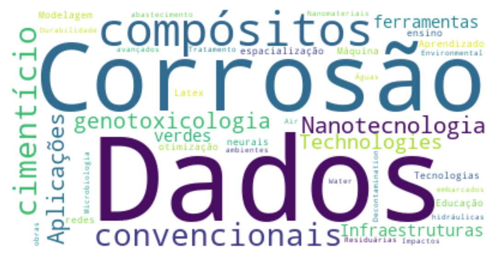

Disciplinas
Informações obtidas nos anos 2021, 2022, 2023 e 2024
Núcleo geral
| Sigla | Créditos | Nome | Oferecimentos |
|---|---|---|---|
| AA002 | * | Tese de Doutorado | * |
| FT054 | 4 | Pesquisa Científica: Concepção, Desenvolvimento e Publicação | 4 |
| FT061 | 4 | Seminário de Tese | 4 |
| FT025 | 2 | Estudos Dirigidos I | * |
| FT055 | 4 | Inovação e Transferência de Tecnologias | 3 |
| FT060 | 4 | Matemática Discreta | 3 |
| FT081 | 4 | Escrita Acadêmica | 4 |
| FT085 | 4 | Tecnologias Emergentes: Dilemas, Riscos e Desafios | 1 |
| FT094 | 4 | Métodos Numéricos e Estatísticos | 5 |
| FT100 | 2 | Atividades de Ensino, Pesquisa e Extensão | 0 |
| —– | Qualquer disciplina de Pós-Graduação oferecida pela Unicamp |
Ambiente
Avaliação, Gerenciamento, Controle e Tratamento; Modelagem e Simulação
| Sigla | Créditos | Nome | Oferecimentos |
|---|---|---|---|
| FT042 | 4 | Tópicos em Tecnologia para o Ambiente I | 6 |
| FT044 | 2 | Tópicos em Tecnologia para o Ambiente II | 6 |
| FT051 | 4 | Transportes de Fluidos | 1 |
| FT052 | 4 | Tecnologias Avançadas e Gestão Ambiental | 2 |
| FT056 | 4 | Gestão, Qualidade e Sustentabilidade Socioambiental | 1 |
| FT071 | 4 | Gerenciamento e Tecnologias para Bacias Hidrográficas | 0 |
| FT072 | 4 | Legislação e Políticas Públicas Ambientais | 3 |
| FT073 | 4 | Gerenciamento de Resíduos Sólidos | 4 |
| FT074 | 4 | Aspectos Biológicos da Aplicação de Resíduos no Solo | 3 |
| FT076 | 4 | Poluição Atmosférica, Clima e Tecnologia | 2 |
| FT079 | 4 | Sustentabilidade, Tecnologia e Ambiente Construído | 2 |
| FT082 | 4 | Tendências em Tecnologias Ambientais | 3 |
| FT083 | 4 | Ambiente: Monitoramento e Controle | 3 |
| FT085 | 4 | Tecnologias Emergentes: Dilemas, Riscos e Desafios | 1 |
| FT086 | 2 | Obras Hidráulicas | 1 |
| FT087 | 4 | Planejamento e Análise Experimental | 2 |
| FT088 | 4 | Modelagem Matemática de Fenômenos Ambientais e Aproximação Numérica | 4 |
| FT089 | 4 | Microbiologia do Tratamento de Águas Residuárias | 1 |
| FT093 | 4 | Resíduos Sólidos Aplicados em Materiais de Construção | 5 |
| FT096 | 4 | Técnicas Analíticas Aplicadas à Amostras Ambientais | 3 |
| FT101 | 4 | Cinema, Tecnologia e Ambiente | 2 |
| FT103 | 4 | Monitoramento e Sensoriamento para Obras Hidráulicas e de Redes de Abastecimento | 2 |
| FT104 | 4 | Fotogrametria e SIG Aplicada a Ambientes Urbanos | 1 |
FT042: Tópicos em Tecnologia para o Ambiente I
- Durabilidade de compósitos cimentícios em ambientes
- Materiais não convencionais empregados em compósitos cimentício
- Nanotecnologia Ambiental: Aplicações e Impactos de Nanomateriais
- Tópicos avançados em genotoxicologia ambiental
- Genotoxicologia ambiental
- Sistemas embarcados para obras hidráulicas e de abastecimento
- Microbiologia do Tratamento de Águas Residuárias
- Environmental Technologies for Water and Air Decontamination
- Produção de Biocombustíveis
- Infraestruturas verdes e ferramentas de espacialização de dados
- Modelagem matemática-computacional e algoritmos de otimização em temas relacionados à transição energética
- Cinema, Tecnologia e Ambiente
FT044: Tópicos em Tecnologia para o Ambiente II
- Materiais não convencionais empregados no ambiente construído
- Métodos cromatográficos de análise aplicados a estudos ambientais
- Infraestruturas verdes e ferramentas de espacialização de dados
- Hidroinformática
Ciências dos Materiais
Desenvolvimento, Utilização e Caracterização; Modelagem e Simulação
| Sigla | Créditos | Nome | Oferecimentos |
|---|---|---|---|
| FT069 | 4 | Tópicos Especiais em Materiais I | 7 |
| FT070 | 2 | Tópicos Especiais em Materiais II | 1 |
| FT020 | 4 | Técnicas para Instrumentação | 0 |
| FT047 | 4 | Aspectos Tecnológicos de Materiais de Construção | 3 |
| FT058 | 4 | Ciência dos Materiais | 3 |
| FT066 | 4 | Modelagem e Simulação Computacional em Materiais | 1 |
| FT087 | 4 | Planejamento e Análise Experimental | 0 |
| FT093 | 4 | Resíduos Sólidos Aplicados em Materiais de Construção | 0 |
| FT102 | 4 | Tecnologias Construtivas Inovadoras | 1 |
FT069: Tópicos Especiais em Materiais I:
- Materiais de construção e sustentabilidade
- Introdução à corrosão
- Interpretações de Ensaios de Técnicas Eletroquímicas em Corrosão, Parte II – Prática Experimental
- Simulação de Corrosão por circuito equivalente, Parte III
- Introdução à Nanotecnologia
- Tecnologia de Transportes
- Cristalografia e Difração de Raios-X
FT070: Tópicos Especiais em Materiais II
- Microestrutura do concreto
Sistemas de Informação e Comunicação
Gestão, processamento e armazenamento da informação; Sistemas de Comunicação Óptica e Via Rádio
| Sigla | Créditos | Nome | Oferecimentos |
|---|---|---|---|
| FT043 | 4 | Tópicos em Tecnologia para Informação I | 4 |
| FT045 | 2 | Tópicos em Tecnologia para Informação II | 8 |
| FT067 | 4 | Tópicos em Comunicação I | 5 |
| FT068 | 2 | Tópicos em Comunicação II | 3 |
| FT007 | 4 | Eletromagnetismo Aplicado | 3 |
| FT020 | 4 | Técnicas para Instrumentação | 0 |
| FT022 | 4 | Tecnologias de Antenas e Micro-ondas | 3 |
| FT065 | 4 | Desempenho de Redes de Comunicação | 2 |
| FT077 | 4 | Processamento de Alto Desempenho | 2 |
| FT084 | 4 | Introdução a Mineração de Dados | 3 |
| FT091 | 4 | Redes Complexas | 1 |
| FT095 | 4 | Engenharia e Gestão do Conhecimento | 3 |
| FT098 | 2 | Teoria da informação: uma introdução | 1 |
FT043 : Tópicos em Tecnologia para Informação I
- Lógica
- Fundamentos da Ciência de Dados
- Sensoriamento Remoto
- Conceitos e otimização de sistemas de energia elétrica
FT045: Tópicos em Tecnologia para Informação II
- Informática na Educação
- Tecnologias e Educação
- Novas abordagens e tecnologias para o ensino
- Visualização de Informação
- Análise Exploratória de Dados
- Introdução às redes neurais
- Análise de Dados Geoespaciais
- Introdução ao Aprendizado de Máquina
- Redes neurais e aplicações utilizando Pytorch
- Probabilidade e Processos Aleatórios
- Utilização do sistema Látex
- Introdução ao Latex
FT067: Tópicos em Comunicação I
- Introdução à Engenharia de Micro-ondas
- Comunicações por Luz Visível
- Processamento de Sinais Bidimensionais
- Segmentação e Classificação de Imagens
FT068: Tópicos em Comunicação II
- Emerging wireless communication technologies (4G / 5G / 6G / IoT) and their social, economic and political impacts on society
- Didática e Metodologias de Ensino
FT105A: Tópico Interdisciplinar I
- Introdução ao Aprendizado de Máquina
- Teorias aplicadas à modelagem e manipulação do conhecimento
Todas as discplinas
| Sigla | Créditos | Nome |
|---|---|---|
| AA002 | * | Tese de Doutorado |
| FT054 | 4 | Pesquisa Científica: Concepção, Desenvolvimento e Publicação |
| FT061 | 4 | Seminário de Tese |
| FT007 | 4 | Eletromagnetismo Aplicado |
| FT020 | 4 | Técnicas para Instrumentação |
| FT022 | 4 | Tecnologias de Antenas e Micro-ondas |
| FT025 | 2 | Estudos Dirigidos I |
| FT042 | 4 | Tópicos em Tecnologia para o Ambiente I |
| FT043 | 4 | Tópicos em Tecnologia para Informação I |
| FT044 | 2 | Tópicos em Tecnologia para o Ambiente II |
| FT045 | 2 | Tópicos em Tecnologia para Informação II |
| FT047 | 4 | Aspectos Tecnológicos de Materiais de Construção |
| FT051 | 4 | Transportes de Fluidos |
| FT052 | 4 | Tecnologias Avançadas e Gestão Ambiental |
| FT055 | 4 | Inovação e Transferência de Tecnologias |
| FT056 | 4 | Gestão, Qualidade e Sustentabilidade Socioambiental |
| FT058 | 4 | Ciência dos Materiais |
| FT060 | 4 | Matemática Discreta |
| FT065 | 4 | Desempenho de Redes de Comunicação |
| FT066 | 4 | Modelagem e Simulação Computacional em Materiais |
| FT067 | 4 | Tópicos em Comunicação I |
| FT068 | 2 | Tópicos em Comunicação II |
| FT069 | 4 | Tópicos Especiais em Materiais I |
| FT070 | 2 | Tópicos Especiais em Materiais II |
| FT071 | 4 | Gerenciamento e Tecnologias para Bacias Hidrográficas |
| FT072 | 4 | Legislação e Políticas Públicas Ambientais |
| FT073 | 4 | Gerenciamento de Resíduos Sólidos |
| FT074 | 4 | Aspectos Biológicos da Aplicação de Resíduos no Solo |
| FT076 | 4 | Poluição Atmosférica, Clima e Tecnologia |
| FT077 | 4 | Processamento de Alto Desempenho |
| FT079 | 4 | Sustentabilidade, Tecnologia e Ambiente Construído |
| FT081 | 4 | Escrita Acadêmica |
| FT082 | 4 | Tendências em Tecnologias Ambientais |
| FT083 | 4 | Ambiente: Monitoramento e Controle |
| FT084 | 4 | Introdução a Mineração de Dados |
| FT085 | 4 | Tecnologias Emergentes: Dilemas, Riscos e Desafios |
| FT086 | 2 | Obras Hidráulicas |
| FT087 | 4 | Planejamento e Análise Experimental |
| FT088 | 4 | Modelagem Matemática de Fenômenos Ambientais e Aproximação Numérica |
| FT091 | 4 | Redes Complexas |
| FT093 | 4 | Resíduos Sólidos Aplicados em Materiais de Construção |
| FT094 | 4 | Métodos Numéricos e Estatísticos |
| FT095 | 4 | Engenharia e Gestão do Conhecimento |
| FT096 | 4 | Técnicas Analíticas Aplicadas à Amostras Ambientais |
| FT098 | 2 | Teoria da informação: uma introdução |
| FT100 | 2 | Atividades de Ensino, Pesquisa e Extensão |
| FT101 | 4 | Cinema, Tecnologia e Ambiente |
| FT102 | 4 | Tecnologias Construtivas Inovadoras |
| FT103 | 4 | Monitoramento e Sensoriamento para Obras Hidráulicas e de Redes de Abastecimento |
| FT104 | 4 | Fotogrametria e SIG Aplicada a Ambientes Urbanos |
| —– | Qualquer disciplina de Pós-Graduação oferecida pela Unicamp | |
| ——– | ———— | ———– |